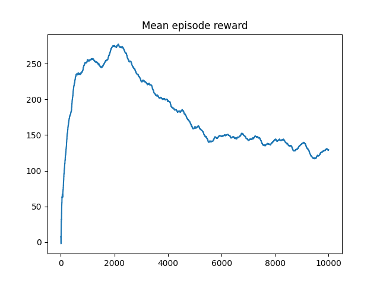
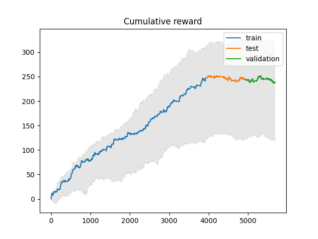

Introduction
Reinforcement learning is often found in autonomous driving, the agent will control the vehicle and interacts with the simulated environment or in reality, therefore it would be interesting to see whether the agent can perform well in the financial market. 
In this article we will implement Deep Q Networks (DQN) by using RLlib, for those who are interested in DNQ please read this paper. 
Data
For simplicity, we will use daily Heng Seng Index future data to explore this idea.  Our data contains HSI future open, high, low, close log return from t0 to t-15, therefore the agent can make a decision using historical data. There is a total of 5679 rows of data, 70% for training, 17% for validation, and 13% for testing. The training set includes data from 20000124 to 20151231, the validation set includes data from 20160104 to 20191231, and the test set includes data from 20200102 to 20221122.
Our data contains HSI future open, high, low, close log return from t0 to t-15, therefore the agent can make a decision using historical data. There is a total of 5679 rows of data, 70% for training, 17% for validation, and 13% for testing. The training set includes data from 20000124 to 20151231, the validation set includes data from 20160104 to 20191231, and the test set includes data from 20200102 to 20221122.
Model
As we said in the beginning, we will use Deep Q Networks (DQN) to train our agent, but before we can move forward we will need to set up the environment.
The agent can buy, sell, hold, cover buy then sell, and cover sell then buy on each day. When the position goes to 0 from 1 or -1, we can obtain the trading profit, and we will use it as a reward, however, we assume there is no other cost, for example, transaction cost.
During the episode, the agent can observe its state which contains Open, High, Low, Close data with 15 days look back and it can compute the action based on the state, followed by the positive or negative reward, the agent can update the weights of the Q-network and minimizing the loss functions by using stochastic gradient descent. 
In this article we want to make it more simple, instead of calculating the trading profit, we will use 1 and -1 be our rewards. If the agent has a positive return, the reward will be 1 otherwise -1. The reason behind this is the author finds DQN is highly unstable in the training when we use trading profit as a reward, hopefully, we could work around this issue in a future article. The meaning of this article is only to have a little taste of reinforcement learning on financial data.
Result
Firstly, let us take a look at the mean episode reward to evaluate the training performance.
The agent learns the policy quickly in our environment, which produces a smooth reward curve during the training. The peak occurred at around 2150 episodes, and afterward, the mean episode declined.
We can have a look at the cumulative reward at 2150 episodes of training.
The training period looks good, the agent reaches an all-time high in the test period. The sum of the mean reward in the test and validation set is close to 0, which may indicate that our agent is overfitted. But this time we are not going to dive too deep into this, we decided to see what is the performance of the agent with 2150 episodes.
We can obtain the trading profit by simulating the action that our agent takes and calculating the cumulative trading profit.
Our agent overall performs better than buy and hold in HSI futures. In the test and validation period, the sum of trading profit is also not statistically significant, we cannot claim that the agent can generate profit in those periods.
Conclusion
In this article, we have discussed a simple usage of Deep Q Networks (DQN) model in reinforcement learning. Instead of trading profit, we use 1 and -1 to represent the reward. Our agent performed well in the training period, but not in the second and third periods which is not surprising.
In the future, we hope we can try more reinforcement learning models and train the agent using different timeframes of futures data. Thanks for reading.